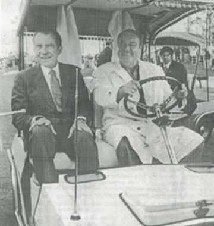
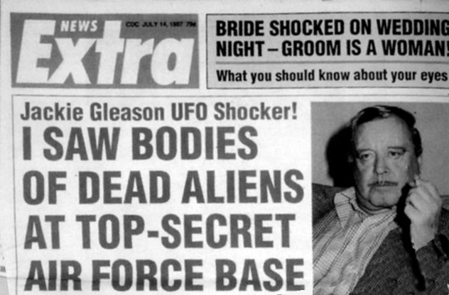

Note: The following reports were filed after several years of trying to locate the subject, BeverlyGleason McKittrick, ex-wife of the famous comedian Jackie Gleason. Her comments would help clarify a story that has become a UFOlogical legend: The alleged Richard Nixon / Jackie Gleason encounter with pickled aliens.In July of 2003, she was located at her home in Easton, Maryland, and her remarks were most interesting. - KY
INTERVIEW with BEVERLY GLEASON
This morning I spoke by telephone withBeverly Gleason McKittrick, an ex-wife of the late comedian Jackie Gleason.I explained to her that I was interested in the progress of her book andif she could talk about Jackie Gleason's claim of seeing alien bodies atHomestead Air Force Base in Florida.
She said that the book never came outas she had 'stopped writing' of it. She said she was 'glad to get out ofit' as Jackie Gleason did not seem pleased with her quoting him on thealiens in Florida. She said that there was not much additional to tellas the whole story regarding Jackie Gleason and the aliens, as far as sheknew, had already been printed anyway.
"Esquire Magazine interviewed me afterour separation," she said, "and I talked about how Jackie told me aboutseeing dead aliens in Florida. I think it was sometime in '74 when thishappened. When I said that it was because he told me."
"After the interview was published,Jackie was upset about the story being public. He called and said he didn'tappreciate me giving the interview, and that's when I started to wonderif the story was 'iffy.'
Left: Image courtesyof Grant Cameron
"The reason I became 'iffy' about itis because I wondered if it was really true, I mean... I believed it thewhole time. I bought the story hook, line and sinker. But if it was true,then why did he get so upset about it?"
Beverly went on to explain how Jackiecame to tell her of his experience.
"Jackie had been out very late one nightI did not know who he was with," She said. "He told me where he was thatsame evening, he said he had been in South
Florida with President Nixon to seesome dead aliens there and I believed him, he was very convincing.
"He and Nixon were in contact quitea bit and I'm not sure how that was arranged, but it seems that their meetingswere set up by an associate of Nixon's. After he got back, he was verypleased he had an opportunity to see the dead little men in cases, he explainedto me what they looked like and he was still talking about it the nextday."
Beverly explained that during her interviewwith Esquire Magazine, she made the statement about Gleason's claim tosee dead aliens and afterward things between her and Jackie turned sour.
"We were on the verge of divorce, buteverything was okay until it came out in Esquire," she said.
She informed that Gleason never diddeny the story
Regarding her announced intention towrite a book, Beverly again said that she
abandoned the project due in largepart to Gleason's objection to her comments about him seeing the aliens.
"I just made that one statement aboutthe UFOs and it appeared in Esquire and I guess a few other places andhe didn't like that and I thought, I just can't go through with this. Lethim live his life. So I never wrote the book."
I thanked Beverly for talking with meand asked if it would be okay for me to call her back later if I had morequestions, she agreed. That concluded our conversation.
Special thanks to Donnie Blessing, GrantCameron and David Rudiak for their help in providing contact informationfor Beverly Gleason McKittrick.
Filed,
JULY 9, 2003
KENNY YOUNG

Subject: Follow-up With Beverly GleasonThis afternoon I placed a second callto Beverly Gleason at her home in Easton, Maryland. We spoke for about15-minutes and I asked if she could recall, for certain, if Esquire Magazinewas the first to print her story about Richard Nixon showing comedian JackieGleason, her late husband, alien bodies after a golf game while at HomesteadAir Force Base in Florida.
Beverly said that she is certain thatit was Esquire Magazine that first printed the story, and went on to describehow the article was the front page cover story of Esquire, carrying a pictureof Jackie and some text regarding UFOs. She also said that the reporterwho did the story still works there, and she could only recall his firstname perhaps being "Ben."
She said that in the years after theEsquire report, other publications picked up the story - some of them shethought, directly from Esquire.
Going back to the Gleason/Nixon meetingsfor golf in Florida, she couldn't remember any specific date they met butsaid that her relationship with Jackie Gleason was good during that timeframe. She said that she had even met with President Nixon herself, meetinghim near a pool and having a drink with him.
She said that later, at the time ofthe Esquire article, her relationship with Jackie was not good.
"I'll be honest with you, about thetime the article appeared Jack and I were breaking up," she said. "Andwhen he saw the Esquire article that just finished everything."
I asked her about the reports she hadplanned to write a book and whether or not she ever prepared a manuscript.She said that she did not have any written manuscript at any time and nothingotherwise prepared. There is nothing she had ever prepared in writing,she said, to document this first-hand.
"At the time Jack came home after hismeeting with The President, he was so giddy and excited about seeing theselittle men," she said, "but in the years afterward I began to ask myselfif any of this could really be true or if he was just telling me that...perhaps having been 'out' with someone?"
I asked her if she could recall anyof his words, a more complete description of the 'little men' or any informationsuch as where they came from or crashed, and Beverly laughed and remindedme of how many years ago this was. She then answered by saying: "you wouldbe best off to find that Esquire article, that probably contains my closestrecollection of anything he said."
I told Beverly that in addition to doingresearch, I also was involved in writing and producing television documentaries.I asked her if she would feel comfortable going 'on camera' with this storyand said that it would be tremendous to preserve her comments and experienceon videotape. She said that she was not interested in going on televisionand thought the story concerning the 'little men' should be authenticatedfirst. I said that the only real 'authentication' would come if the governmentannounced having the bodies and she said "I guess you're right, but I guessI just don't want to go on camera with this."
I thanked her for talking with me andshe again suggested I find the Esquire magazine article.
Filed,
AUGUST 6, 2003
Kenny Young